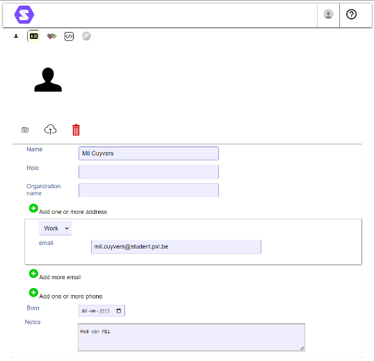
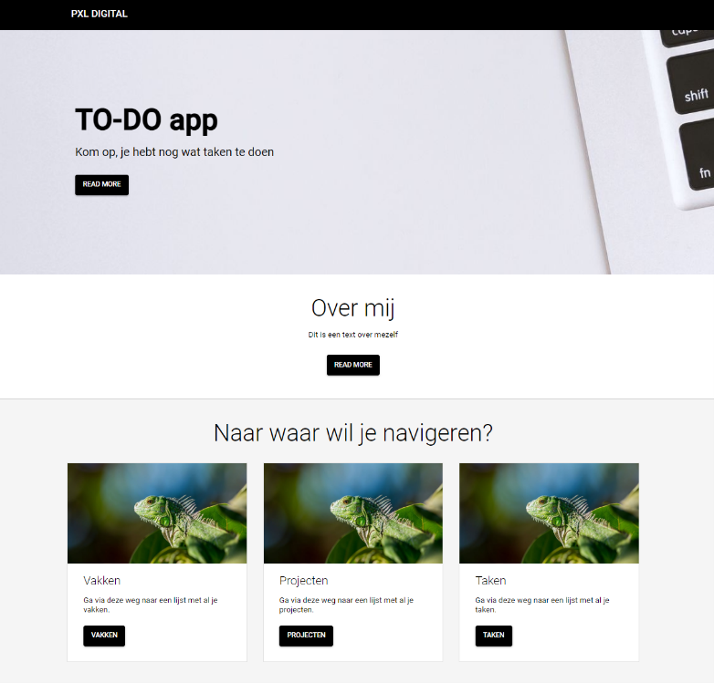
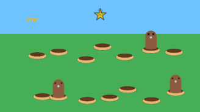

Ik, Mil Cuyvers, ben een student Toegepaste Informatica met het keuze traject AI & Robotics aan Hogeschool PXL. Ik hou van experimenteren met allerlei soorten technologieën. Bij mijn projecten probeer ik met goede communicatie een kwalitatief resultaat te bekomen waar ik trots op kan zijn. Ik hoop een werkplek te vinden waar ik steeds kan bijleren en de kans krijg om nieuwe dingen te proberen.
Activiteiten
Projectweek
15-02-2021
Een week met uitleg over de rest van het academiejaar, resterende opdrachten in de opleiding en een introductie van je team voor het research-project en enkele seminaries over teamwork.
Seminarie Craftworkz
23-02-2021
Het seminarie werd ingeleid met de slogan: “From idea to solution”. Hoe kan je op een agile manier een probleem van begin tot eind aanpakken?
Seminarie Craftworkz: Design Sprint
02-03-2021
In dit seminarie werd de design sprint strategie voorgesteld en gedemonstreerd aan de hand van een praktische groepsopdracht.
Seminarie Brainjar: AI
16-03-2021
Een introductie tot verschillende soorten AI en de manieren waarop Brainjar deze toepast.
Seminarie RCCU
4-05-2021
Hoe worden digitale criminele activiteiten onderzocht, wat doen criminelen om zich te beschermen en welke tegenmaatregelen heeft de politie hiervoor?
Seminarie Eurofins: API testing
24-11-2021
Een introductie tot API testing aan de hand van een korte uitleg en enkele praktische oefeningen.
Seminarie Deloitte: Introduction Salesforce & maturity assessment
8-12-2021
Een introductie van Salesforce aan de hand van een opdracht. Er is een bestaande Salesforce setup waar fouten gecorrigeerd moeten worden.
Seminarie Konsolidate: Solid
15-12-2021
Een voorstelling van een nieuwe technologie, Konsolidate: Solid. Het idee is om data en applicaties los te koppelen en de data te plaatsen onder de controle van de eigenaar ervan.
Seminarie NVISO
12-01-2022
Een seminarie over de veiligheidsproblemen van Office-documenten, hoe gevaarlijk is het en wat kan er gedaan worden om jezelf te beschermen.
POP-Sessie: Brein aan het werk
9-03-2021
Hoe kan je beter plannen, wat kan je doen om minder snel te worden afgeleid en wat je kan helpen je aandacht te richten?
POP-Sessie: (Veer)Krachtige Teams
23-03-2021
Do’s en don’ts in een team. Wat zijn de voor- en nadelen van in een team werken en wat maakt een goed team.
POP-Sessie: My team and I
23-10-2021
Hoe zorg je als individu dat het team goed werkt? Wat doe je als er conflicten ontstaan en wat is er belangrijk om conflicten te vermeiden?
Innovatieroute: Low Code
30-09-2021
Een reeks seminaries en presentaties van verschillende low code solutions.
Innovatieroute: Hackathon
15-02-2022
Een hackathon georganiseerd door de hogeschool over games voor mensen met een functiebeperking.
Selectie van Activiteiten
Seminarie Konsolidate: Solid
Op 15 december 2021 vond het seminarie over Solid van Konsolidate plaats. Het seminarie ging online door vanwege de coronamaatregelen die destijds van kracht waren. Ik wist niet goed wat ik van dit seminarie moest verwachten. De beschrijving bij het inschrijven was kort en gaf weinig inzicht in het onderwerp van de presentatie. Desondanks kan ik zeggen dat ik aangenaam verrast was.
Het seminarie begon met een introductie en uitleg van Solid. Daarna werden enkele voorbeelden getoond en ten slotte een praktijk opdracht om zelf eens met Solid aan de slag te kunnen gaan. Voor de opdracht moesten we Solid implementeren in een webapplicatie die we kregen als startbestanden.
Solid is een technologie die ernaar streeft de applicatie en de data volledig af te zonderen. Dit werkt aan de hand van een Pod waar een gebruiker zijn data in kan opslaan en beheren. Als de gebruiker dan een applicatie wenst te gebruiken kan hij die applicatie toegang geven om bepaalde data uit zijn Pod te gebruiken. Hierdoor wordt de data van gebruikers maar op één plek opgeslagen. Het laat niet enkel toe om gegevens zoals je e-mailadressen, telefoonnummer en thuisadres op te slaan maar ook bestanden kan je naar je Pod uploaden. Daarbij komt dan dat die bestanden ook toegankelijk gemaakt kunnen worden aan een applicatie als dit nodig zou zijn. Als een gebruiker zijn data wilt wijzigen, kan hij dit gewoon doen in zijn Pod en wordt dit voor alle services waarvan hij gebruik maakt geüpdatet. Dit is zeker handig als je van adres of bank veranderd. De gebruikers hebben ook nog de optie om hun Pod zelf te hosten of dit over te laten aan een derde partij. Beide opties hebben hun eigen voor- en nadelen. Als je een Pod zelf host heb je volledige controle over alle data en weet je perfect waar je data is opgeslagen. Anderzijds, als je een Pod door een derde partij laat hosten is het makkelijker om met je data te werken. De beveiliging is ook beter dan bij een standaard zelf gehoste Pod. Als ze hun data wensen te wijzigen kunnen ze dit op één plek voor alle services waarvan ze gebruik maken doen.
De praktische opdracht ging eerst moeizaam. Om gebruik te kunnen maken van applicaties die Solid implementeren moet je eerst je eigen Pod hebben. Deze Pod maken is op zich niet zo moeilijk. De opdracht zelf, waar we Solid moesten implementeren in een applicatie ging iets moeizamer. Het duurde even voor ik door had hoe de implementatie juist werkt maar eens ik dat onder de knie had vlotte het wel. Mijn implementatie is uiteindelijk wel gelukt en ik heb de opdracht dus met succes volbracht. Het is ook met deze opdracht dat ik erachter kwam dat het voor applicatie ontwikkelaars veel makkelijker is om met Solid te werken. Ze moeten enkel zorgen dat de verbinding met de Pod werkt en daarna niet meer wakker liggen over het
beveiligen en verwerken van gebruikersdata.
Zoals ik in het begin al zei wist ik niet goed wat te verwachten en was ik aangenaam verrast. Het is een interessant concept en ik hoop persoonlijk dat het in de toekomst zichzelf kan bewijzen en in populariteit kan groeien. Het lost heel wat problemen op rond de GDPR en data protectie wetgevingen en geeft de gebruiker betere controle over welke data toegankelijk is en waarvoor die gebruikt kan worden. Het systeem is natuurlijk niet perfect. Als een hacker toegang krijgt tot je Pod heeft hij natuurlijk nog steeds volledige toegang tot je data. Gelukkig is er standaard goede encryptie om dit te voorkomen. Voor mij was dit een verfrissende blik op data opslag en verwerking, naar mijn mening één van de belangrijkste onderdelen van een moderne applicatie.
Ik zou in de toekomst graag eens een volledige applicatie ontwikkelen met Solid. Ik denk dat het concept een beter alternatief is dan de huidige methode waarop data die we op het internet beschikbaar maken behandeld wordt. Namelijk elke applicatie vraagt om je gegevens en slaagt ze op in hun eigen databases. Het nadeel van Solid, en hetgeen wat in mijn ogen de standaardisering zou kunnen tegenhouden, is dat dit meer werk en onderhoud vergt van de gebruikers zelf. Dit seminarie heeft mij ervan bewust gemaakt dat er wel alternatieven zijn voor data opslag en de veiligheidsmaatregelen die daarbij betrokken zijn. Ook was dit nogmaals een goed voorbeeld dat het ook voor de gebruiker belangrijk is hoe ze met hun data om gaan.

voorbeeld van een basis Pod
Innovatieroute: Low Code
Als onderdeel van I-Talent werd er gevraagd een innovatieroute te kiezen met als doel kennis op te doen over een onderwerp dat in de opleiding weinig of niet aan bod gekomen is. Ik koos voor de innovatieroute Low Code. Tijdens enkele dagen in de weken van 30 september 2021 tot en met 21 oktober 2021 werden er seminaries en demonstraties gegeven van verschillende low code platformen door bedrijven die de platformen ontwikkeld hebben of bedrijven die een platform gebruiken om applicaties voor hun klanten te bouwen.
Low code is een technologie waar ik tot voor de innovatieroute nog niet veel over wist. Bij de seminaries over de verschillende low code platformen was meestal een voorbeeld in de praktijk en een praktische opdracht om zelf de platformen eens uit te testen. Zo konden we zelf de voor- en nadelen ondervinden van de verschillende platformen en ook low code in het algemeen.
Low code is programmeren zonder code. Het idee is om op een makkelijke manier snel een applicatie te kunnen maken. Meestal door componenten te slepen en pagina’s te verbinden op een soort relatiediagram. Low code heeft over het algemeen het nadeel dat het beperkt is tot de beschikbare componenten van het platform waarop je een applicatie wilt bouwen. Het is meestal wel mogelijk om je eigen componenten te maken maar hiervoor moet dan wel echte code geschreven worden. Ook is de performantie meestal minder goed omdat er een extra laag, namelijk de vertaling van het platform naar echte code, in de applicatie zit. Dit is echter minder en minder een probleem omdat computers steeds krachtiger worden en de low code platformen zelf ook beter en beter geoptimaliseerd worden. De innovatieroute bestond uit 3 dagen gevuld met seminaries rond low code. Elk van deze seminaries presenteerde een ander low code platform en ze bestonden voornamelijk uit een praktische oefening na een korte uitleg.
Het was een interessante innovatieroute. Ik was aangenaam verrast van de mogelijkheden van de verschillende low code platformen maar de opdrachten toonden ook aan dat er wel degelijk limieten zijn. Alhoewel low code meestal simpeler is dan een soortgelijke applicatie programmeren, mag je de ontwikkeling van een applicatie met low code zeker niet onderschatten. Er is nog steeds een goede kennis van het verkozen low code platform nodig om het gewenste resultaat te bekomen. Alhoewel sommige dingen zeker makkelijker en sneller zijn, moet er soms ook door verschillende pagina’s geklikt worden om kleine dingen zoals een kleur of font aan te passen. Dit is het grootste verschil bij de verschillende platformen. Sommige laten het toe om alles aan te passen op één plek maar er zijn dan meestal minder opties dan platformen die opties opsplitsen over verschillende menu’s en pagina’s. Low code applicaties bestaan al in de praktijk. Het is meer en meer de verkozen optie voor bedrijven die een simpele website of zelfs een simpel klantenrelatie systeem willen. Ik geloof dat dit in de toekomst zeker niet zal veranderen. Dat gezegd zijnde, er is nog een lange weg te gaan vooraleer er geen programmeurs meer nodig zijn.
Ik denk dat low code in de toekomst meer en meer gebruikt zal worden. Persoonlijk vond ik werken met low code niet heel aangenaam. Het idee van low code is om op een simpele manier snel iets te kunnen maken. Hier kan het zeker ook in slagen. Zeker het opbouwen van een pagina kan in enkele minuten gebeuren met low code. Anderzijds moet je voor eenvoudige aanpassingen zoals de kleur van tekst aanpassen, al snel vier of vijf keer klikken. Functionaliteit van knoppen en tekstvelden is ook snel te implementeren maar pagina’s met formulieren of meerdere knoppen met verschillende functionaliteiten worden snel onoverzichtelijk. Ik zie wel in dat voor mensen die geen programmeertalen kennen dit een goed alternatief is. Zelfs als ze hun applicatie laten bouwen door een extern bedrijf is het nog steeds mogelijk om die applicatie zelf te onderhouden omdat de low code platformen over het algemeen vrij gebruiksvriendelijk zijn. Desondanks gebruik ik persoonlijk nog steeds liever de klassieke manier van programmeren.
Voor de aanvang van deze innovatieroute wist ik weinig over low code. Ik ben verbaasd over de mogelijkheden die low code met moderne platformen heeft en de minimale impact op performantie. Ik ben niet onder de indruk over hoe omslachtig of simpelweg onmogelijk sommige dingen zijn. Het is vaak alsnog nodig om code te schrijven omdat de beschikbare componenten niet voldoen. Dit zal waarschijnlijk ook altijd zo blijven omdat er wereldwijd oneindig veel verschillende vereisten zijn van applicaties. Het is praktisch onmogelijk voor een low code platform om een oplossing voor ze allemaal te hebben.

voorbeeld van een webpagina gemaakt met Betty Blocks, een Low Code platform
Innovatieroute: Hackathon
Eén van de verplichte delen van I-Talent was deelnemen aan een hackathon. Ik heb deelgenomen aan de hackathon rond Unity games op vijftien en zestien februari 2022. Deze werd georganiseerd door PXL-Research in samenwerking met de opleiding Ergotherapie. Helaas moest ook deze activiteit vanwege de coronamaatregelen online doorgaan wat het iets moeilijker maakte om in teams te werken maar we zijn er toch in geslaagd.
Tijdens de hackathon werd er gewerkt in teams van zes. De opdracht was om in Unity een spelletje te maken voor mensen met een functiebeperking. Unity is een game-engine voor het ontwikkelen van games. Unity is één van de populairste game-engines omdat het over het algemeen de engine is die het makkelijkst te leren is zonder hier al te veel functionaliteiten en mogelijkheden voor op te moeten geven. We kregen een aantal ideeën voor spelletjes om uit te kiezen en een lange checklist met voorwaarden om de spelletjes speelbaar te maken voor de doelgroep. Wij kozen voor een simpele versie van ‘Whac-a-mole'. Een simpel spel waar op bepaalde locaties willekeurig een mol verschijnt. De speler moet deze mol dan terug naar beneden “slaan”. Sinds ons spel gemaakt wordt voor tablets kan dit door op de mol te tikken. Andere instellingen zoals de tijd tussen het verschijnen van mollen, hoelang het duurt voor een mol verdwijnt, hoeveel mollen er tegelijk tevoorschijn kunnen komen en hoeveel er in één keer tevoorschijn mogen zijn moest bepaald kunnen worden in de instellingen.
We zijn begonnen met een kort gesprek binnen het team over hoe we de opdracht gingen aanpakken. We hebben direct de taken opgedeeld zodat iemand kon beginnen aan de functionaliteit van het spel zelf, het spelmenu en het instellingenmenu, visuele aspecten zoals de achtergrond, de mollen en de gaten waaruit de mollen kunnen verschijnen en geluiden en visuele animaties en effecten. Daarna hebben we alles opgedeeld zodat iedereen iets te doen zou hebben. Ikzelf viel binnen dit team in een leidersrol en ik heb mij doorheen de hackathon voornamelijk gefocust op animaties en effecten, zorgen dat ons spelletje in overstemming was met de opgelegde regels en beperkingen en testen.
Over het algemeen is de hackathon voor ons team goed verlopen maar wel was het alweer maar eens een herinnering dat goede communicatie in een team belangrijk is. In de namiddag van de eerste dag was de map met ons spelletje volledig corrupt geraakt omdat niet iedereen dezelfde versie van Unity gebruikte. Dit hebben we uiteindelijk opgelost door terug te gaan naar een vorige versie en daar hetgeen we verloren waren opnieuw aan toe te voegen. Daarbuiten hebben we weinig problemen gehad. We hadden helaas niet genoeg tijd om alle instellingen te doen werken zoals we het wilden maar met de gelimiteerde tijd die we hadden wisten we op voorhand dat dit moeilijk zou zijn. De voornaamste instellingen zoals de snelheid en hoeveel mollen er kunnen zijn werkten wel en het spel zelf werkte vlekkeloos. Ik denk dat we tevreden mogen zijn met het resultaat dat we bereikt hebben in de korte tijd die we daarvoor hadden. De organisatoren waren het hier mee akkoord en denken het spel in de toekomst uit te testen met de doelgroep en hopen dat het in de toekomst helemaal afgewerkt kan worden.
Voor de hackathon kende ik helemaal niet veel van Unity. Gelukkig hadden we in ons team mensen die eerder met Unity gewerkt hebben en is het met Unity relatief makkelijk om de basis onder de knie te krijgen. De opdracht op zich was simpel genoeg om daar ook realiteit van te maken. Ook was het snel duidelijk dat version control systemen zoals Git, die het toelaten om met verschillende mensen aanpassingen te kunnen maken tegelijkertijd en dan die aanpassingen op een makkelijke manier kunnen uploaden en afhalen, niet goed samenwerken met Unity. Dit komt doordat Unity bij elke verandering achterliggend een hele hoop bestanden volledig aanpast. Als twee mensen dan hun aanpassingen proberen te uploaden ontstaan er telkens conflicten omdat die bestanden in de twee verschillende versies helemaal niet overeen komen. Dit is zeker iets om in het achterhoofd te houden in toekomstige projecten.
Ik wil in de toekomst zeker nog met Unity werken. Deze hackathon heeft voor mij een interesse voor game-engines aangewakkerd en ik heb sindsdien een aantal kleine experimentele projectjes gemaakt met Unity en andere game-engines. De hackathon was ook een goed voorbeeld van waarom het belangrijk is om regelmatig back-ups te maken. Normaal is dit de taak van het version control systeem maar als dit om één of andere reden niet goed werkt mag het zeker niet vergeten worden. Hoe dan ook ben ik tevreden met ons spelletje en ik kijk uit naar de volgende hackathon waaraan ik kan deelnemen.

screenshot van het spel